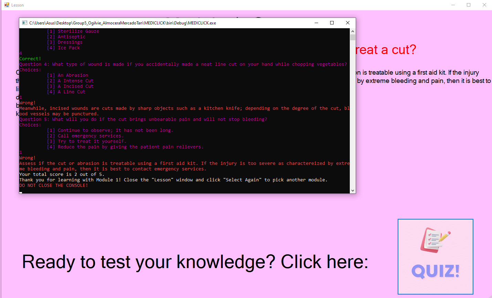
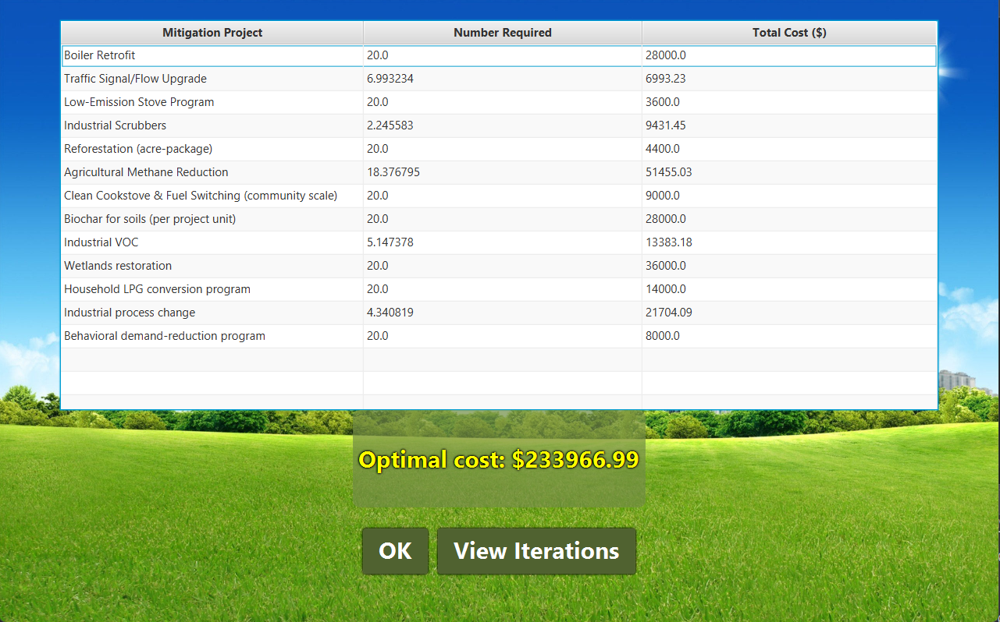
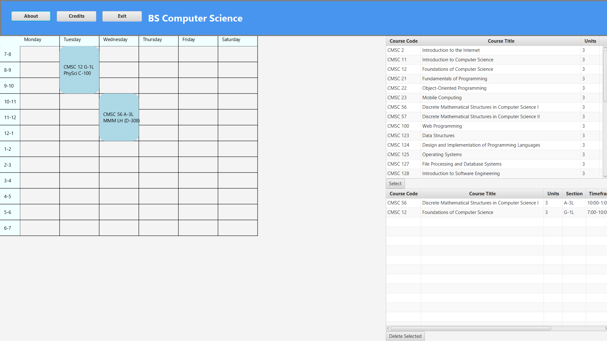

I am Ross Almocera, a computer science student from UPLB. I enjoy programming, creating programs and watching them function in real time. I am working on improving my skills as a programmer so I can be capable of accomplishing more in the world of technology, especially in game development, which is a true passion of mine.
I am experienced in multiple programming languages, including Python, C#, Java, HTML & CSS, Assembly, and more, allowing me to create many different kinds of applications for varying purposes.
I have experience in coordinating with peers in required projects. I have been responsible for leading the team in the design and creation of program code on multiple occasions.
My first project, MEDICLICK, is a C# program built in Visual Studio with the purpose of letting regular citizens inform themselves of common injuries/health emergencies at home. It was designed to allow the user to be quickly informed of what to do should a medical emergency happen. It also comes with built-in quizzes for the user to test their knowledge on injuries.
I was the sole programmer of the project, while my fellow contributors were responsible for the collection of research and information.
The CEPPR, short for City Environmental Planner for Pollution Reduction, is a cost-optimization program built with Java and JavaFX meant for cities to minimize costs in reducing pollution in their areas. Given data on pollution reduction per project and the required pollution to reduce, this program can find the lowest possible cost to achieve reduction (if possible).
This was a solo project.
Also created with Java and JavaFX, the ASMS is a program that allows a student to manage their weekly schedule. One can add and remove classes, and a visual calendar is provided for the user's convenience. It also comes with a registration and login system.
I took the lead in the creation of the program, implementing most of the application's core features and logic structure.
